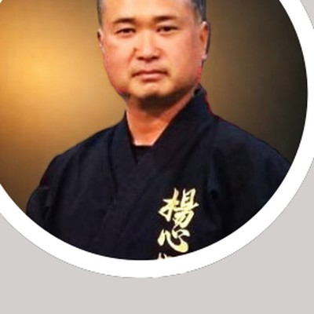
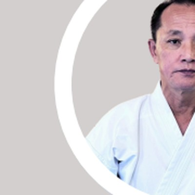
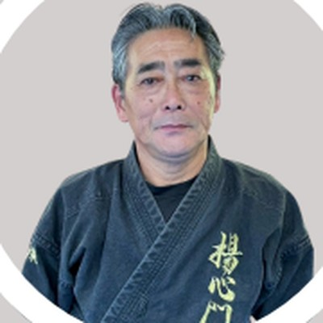
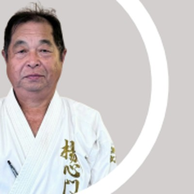
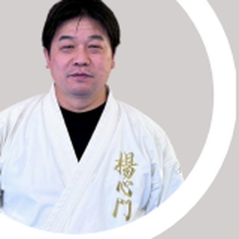
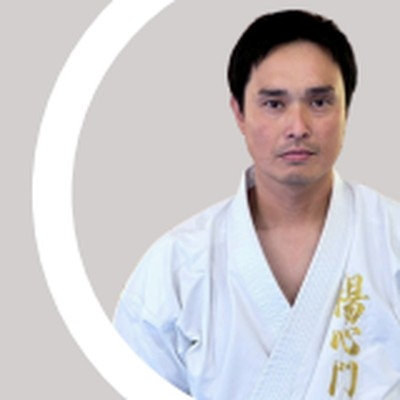

明るく、楽しく、元気よく
空手を一生懸命やれば、学徳向上する
学問を一生懸命やれば、空手が上達する
ゆえに、楊心門（一道）には、文武の徳がある
宗師 南谷 拳龍
最勝寺最高顧問より名付けていただいたもの
格言の「創意無限」より由来。独創的なアイディアを見い出し、新たな方法を無限に考え出す知恵（流派）
楊（柳）の枝のような柔らかく、しなやかな技術力と精神性を指導（養成）する場
空手道を主体とし、多くの武器法や護身術を兼ね備えた総合的武術
無限の可能性を秘め、柔らかく、しなやかな技術力と精神性を養成すると共に、多くの武術に対応しうる総合的武術
宗師を中心に、先生方や保護者が親元となり、総ての生徒達が兄弟姉妹となります。 皆で切磋琢磨しあい、この大家族を大木に育て全国に広げよう！
仏教用語で、恩義（人から受けた恩）なり。恩義に四恩あり。 ①師の恩 ②父母の恩 ③衆生の恩（友、仲間あればこそ） ④先祖の恩。 この四恩こそ、人として、日本人として、武道家として最も大切な教えです。
学生時代の12年間を修業（人づくり）の場とし、 高校を卒業し、社会へと巣立った時に、その仕事を貫き通す強い精神力を養うと共に、 この国（日本）の為になるように、世の為、人の為に役立つ生徒を育成することを最大の目的とします。
一、私達はいつも、進んで稽古をいたします
一、私達はいつも、人に優しくいたします
一、私達はいつも、礼儀正しくいたします
相手の攻撃から身を守るだけでなく、広く交通事故や病気等からも身を守る
弱い人を助けると共に、広く世の為、人の為になること
人として、武道家として、礼儀作法が最も大切です
10月10日、宗師 枦山拳龍十段範士が楊心門総合武術協会を開設。11月24日に第一回交流大演武大会を開催。
防具付全日本空手道連盟設立に際し楊心門が加盟。第一回防具付全日本空手道選手権大会（岡山県）に参加。
名称を「真道無限流総合武術協会 楊心門空手道」に改名。南谷宣斉統括本部長を第二代宗師十段範士に推挙。8月11日、総本山を開山。
4月14日、南谷拳龍宗師が新形「無限龍拳」を定める。万有気魂 — 心身統一、天地一体、魂の形。
7月27日、第11回防具付全日本空手道選手権大会を鹿児島県桜島にて開催予定。南谷拳龍宗師が実行委員長を務める。
真道無限流の技と心を伝える師範陣

防具付全日本空手道連盟副会長。2013年に楊心門総合武術協会を開設。2022年逝去。

防具付鹿児島県空手道連盟会長。全国大会一般軽量級組手4度優勝。




